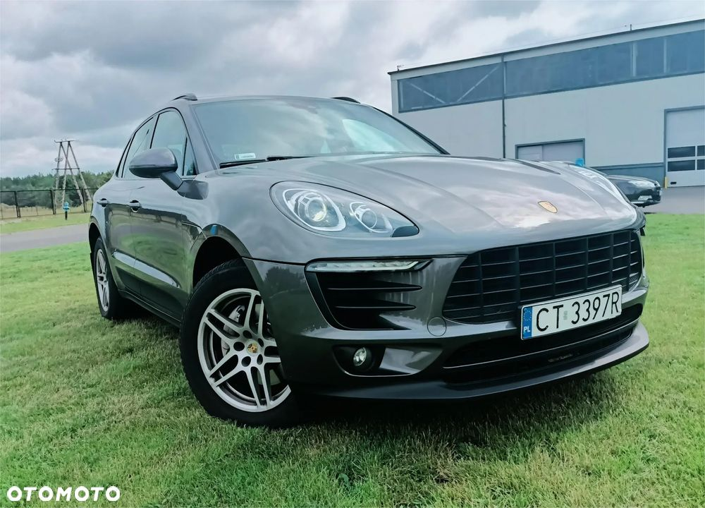

Na sprzedaż oferuję auto, które zostało zakupione w salonie Lellek Sopot. Jestem pierwszym właścicielem. Wystawiam fakturę.
___________________________________________________________________________________________________
**Stan i Serwis:** Samochód był na bieżąco serwisowany. W miesiącu marcu 2025 roku przeszedł spory serwis, w którym wymieniono m.in. klocki, tarcze oraz czujniki klocków hamulcowych. Dokonano również innych niezbędnych napraw eksploatacyjnych: wymiana filtrów: kabinowy, powietrza, oleju ( dokumenty do wglądu).
______________________________________________________________________________________________________
**Wyposażenie:** Samochód jest w kolorze Agate Grey. Jest bardzo dobrze wyposażony, m.in. w: - asystenta parkowania przód/tył z kamera cofania, dywaniki, kierownicę wielofunkcyjną, ogrzewaną , pokrytą włóknem węglowym- Panoramiczny dach - Elektryczne, podgrzewane fotele - Nawigację - I wiele innych funkcji.
